Brand · soyjavi.com · reference
A life, not a résumé.
The brand of the site: a name in letters, one soul in two lights, and a sky of dots in which every memory is a soft cloud and only the moments that matter have a name. This page shows what ships; when a token, a station or a rule changes, it changes with it.
01 / Essence
Six lines to keep.
- A life is a shape, not a résumé: work is one thread among many.
- Memories are soft clouds, not sharp points; the form that holds them is clear.
- One soul in two lights: no hue, only ink and paper, bone and night.
- Letters carry the name. Dots never spell it.
- The document is the truth and the scene is its projection.
- Nothing watches the reader, and nothing private about anyone is shown.
02 / Name
javi, and soyjavi as an address.
The brand is the short name. soyjavi stays where an address is needed: the domain, GitHub, X and email. It reads as a handle and, as a sentence, only works in Spanish; javi works in every language.
| Use | Form | Where |
|---|---|---|
| Brand | javi | Wordmark, masthead, title tags, share card |
| Running text | Javi | Sentences, copy, the footer |
| Address | soyjavi.com | Set in Geist Mono, never as the logo |
| Never | SoyJavi · Soyjavi · @javi | Anywhere |
Alternatives considered
| Name | For | Against |
|---|---|---|
| javi | Short, warm, international, already how people say it | Common; needs the surrounding words to be findable |
| Javi Jiménez | Findable and formal | A full name beside a life story is material for impersonation |
| soyjavi | Already the domain and the handle | Reads as a username; long; Spanish only |
| j | A monogram for small places | Not a name; used only as the favicon and the portrait |
03 / Wordmark
Letters, drawn once.
Instrument Serif Italic, outlined so it never depends on a font being loaded: a favicon, an email signature and a share card all use the same drawing. Clear space is the height of the dot of the i; the smallest size is 22 px tall.

Monogram and favicon
Lockups
- Never in dots, in colour, in outline, in roman, stretched or on a busy picture without the translucent ground of a panel.
- The wordmark is always
javiin lowercase italic; the monogram is thej. - One author, two works: the book's card and the clone's card end with a mono preposition and the wordmark at 20 px (by javi, with javi; de javi, con javi). The clone's card also says in one sentence that it is not him.
- The header draws the wordmark as the outlined SVG, inline, in the text colour, 38 px high (24 px on a phone), centred on the line of the sections and 36 px before them;
tools/wordmark.mjsgenerates the files from the font and a test fails when they drift.
04 / Colour
One soul, two lights.
Warm greys and no hue at all. Hierarchy comes from luminance, size and weight. Focus, links and selection use contrast, not colour. Night is the first look whatever the system says; the switch in the masthead keeps paper for those who need it and is remembered.
#f3f1ec#e9e6df#d6d3cb#6a6963#44433f#151513#0c0c0b#161614#2a2a27#8b8a85#b9b8b2#ecebe7Contrast on the page ground (WCAG 2.2)
| Pair | Ratio | Use |
|---|---|---|
| Ink on paper | 16.20 | Text |
| Paper soft on paper | 8.77 | Body copy |
| Paper muted on paper | 4.88 | Labels, dates; never on a raised ground (4.42) |
| Bone on night | 16.41 | Text |
| Night soft on night | 9.84 | Body copy |
| Night muted on night | 5.66 | Labels, dates |
| Line on paper | 1.33 | Decoration only, never the only cue |
| Line on night | 1.36 | Decoration only, never the only cue |
05 / Type
A serif for the voice, a sans for the text.
Instrument Serif for the name, the headings and the milestone titles; Geist for reading; Geist Mono for dates, labels and addresses. All three are open licence and ship with the site.
Display · Instrument Serif, −0.02em, 0.92
A life, in milestones.
Heading · Instrument Serif
Learning the trade.
Milestone title · Instrument Serif
A book: CoffeeScript
Lede and body · Geist
I'm Javi. These are the moments that made me, from a farmhouse in the Basque Country to today.
Label · Geist Mono, 0.18em, uppercase
02 / The craft · 2001–2011
Date · Geist Mono, 0.12em, uppercase
Jun 2001 · ~1981 · 2020
The scale · tokens in brand.css
| Token | Size | Use |
|---|---|---|
| --fs-label | 12 px mono, 0.12em, capitals | Anchors, dates, counts; nothing structural is smaller, and muted ink over the scene only at 12 px or more |
| --fs-small | 14 px sans | Notes, forms, status |
| --fs-body | 17 px sans (16 px on a phone) | Reading |
| --fs-tag | 17 px serif italic (16 px on a phone) | Relations and edge markers; no serif is drawn smaller |
| --fs-title | 26 px serif italic | The open memory's heading |
| --fs-display, --fs-h2, --fs-h3 | Fluid, as today | Card titles and the hero |
06 / The sky
Memories are sparks. The periods are galaxies.
A life is a path through space that turns outwards and rises a little with time. Each period of it is a galaxy, as big as what it holds; inside, each thread draws its constellation and time runs from the core to the edge. Each memory is a soft cloud of dots, bigger when it weighed more, and the fine dust between them is the days, thicker where more happened. After the last period the path goes on dashed: today, then two hollow rings, the book and the clone.
| Quantity | Value | Meaning |
|---|---|---|
| Galaxy | 4 units plus 3.2 per square root of its memories | One per period, from its first memory to the first of the next |
| Path | Half a turn 1.9 times over, 1.75 times as far out at the end, rising 26 units | Clockwise from the top, a 12-unit gap between galaxies; the past is at the centre and further away |
| Inside a galaxy | A sector per thread, from 22% of the radius to the edge | The core is the start of the period, the edge its end; memories of one thread close in time take different lanes |
| Memory cloud | Spread 1.1 · 1.6 · 2.2 | Weight 1, 2 and 3: how much it changed things; smaller where many memories crowd one year |
| Fine dots | 470 per unit of weight, at most 120,000 in the clouds | Shared by weight to the power of one and a half, fewer each when the life is bigger; plus 18,000 of dust in the galaxies |
| Dust | Along each thread's sector, thicker where it was busy | One dot in seven near the core; 6% of it lies ahead of today and is dim |
| Today | A filled dot with a pulsing ring | Taken from the visitor's calendar day, just past the last galaxy |
| The book, the clone | Hollow rings at 30% and 70% of the 44 units of path ahead | What is still to come, away from where it started |
| Dates | Year or month, never a day | A tilde marks an approximate one: ~1981 |
- The four kinds of milestone (personal, professional, product, education) share the same cloud: kind is told in words, not in colour.
- A milestone appears only after the creator has approved it as public, as public text with the precision he allows.
- People appear by the names he approves; no one carries a day or a photo unless he decides otherwise.
The sky · its words
The site borrows its words from astronomy and uses each for one thing. A life is a sky, not a galaxy: the sky holds the galaxies, and each galaxy is an age.
| In the life | In astronomy | On the site |
|---|---|---|
| The whole life | The sky, a group of galaxies seen as one night | Everything told, from 1980 to what is ahead |
| An age | A galaxy turning round a core, with arms | Core the start of the age, rim its end, arms the threads it holds |
| A memory | A star cluster or a nebula | A soft cloud of dots, brighter by weight, never a sharp point |
| A thread | A constellation, and an arm of the galaxy | A line joining its memories in time, drawn when the camera is close |
| A person, a place | A constellation drawn by another rule | A filter that lights what shares it |
| A year | An orbit, a growth ring | A ring round the core at the radius of its date |
| The dust between | Interstellar dust | The days nobody told; it shows the shape of the age |
| The path | A filament of the cosmic web | The line the galaxies lie along, turning outwards |
| The book, the clone | Galaxies not yet formed | Two hollow rings further along the path |
Where astronomy helps reading, the sky follows it: each galaxy turns about its centre, against the winding of its arms, and what is older sits nearer the core. Where it would hide the life, the life decides: a galaxy turns like a record, not faster in the middle, and size and brightness say the weight of a memory, never a distance.
The ages · what a galaxy is
A galaxy is not a project or a job: it is an age of a life, the way people have divided a life for three thousand years. Solon counted ten sevens, Hippocrates, Ptolemy (who gave each age a planet) and Shakespeare seven, Augustine and Isidore six, Rousseau five books, Ortega five fifteens, Erikson eight, Levinson four eras, Dante and the Hindu ashramas four, Confucius a decade at a time and the astrophysicists five ages of the universe. They differ in how many, and agree on where the cuts fall, so the site uses the seven ages of a person, cut at the ages those traditions share, counted from his birth. A galaxy takes its shape from what it holds: a long age with little in it is stretched into an ellipse, it has only the arms of the threads it holds, and it winds more the longer it lasts. Each memory sits in the galaxy of the age it was lived at; only the ages lived and remembered are drawn, so the sky has five galaxies today and at most seven.
| Age | Cut at | Where the traditions agree |
|---|---|---|
| Early years | 0 | Hippocrates’ paidion, Isidore’s infantia, Shakespeare’s infant; school begins at 7 (Hippocrates, Isidore, Piaget, Erikson at 6) |
| School years | 7 | Hippocrates’ pais, Isidore’s pueritia, Shakespeare’s schoolboy; Erikson’s industry |
| Youth | 14 | Puberty: Hippocrates, Ptolemy and Isidore at 14, Confucius at 15, Rousseau, Ortega, the Mishnah; Shakespeare’s lover, Ptolemy’s Venus, Dante’s adolescence to 25 |
| Building a life | 25 | Full majority: Dante, the ashramas and the maturing brain at 25, Levinson’s early adulthood; Shakespeare’s soldier, Ptolemy’s Sun, Dante’s summit at 35, the householder |
| Midlife | 40 | Confucius “without doubts”, Jung’s afternoon of life, Erikson, Levinson, Ptolemy at 41, the Mishnah’s understanding at 40; Shakespeare’s justice |
| Elder years | 55 | The ashramas, Isidore and Hippocrates around 50, Ptolemy at 56; Shakespeare’s pantaloon |
| Later life | 70 | Psalm 90, Ptolemy at 68, Isidore, Solon and Confucius at 70; Shakespeare’s second childhood |
07 / Scene
Explore it, in any order.
The home page is a three.js space to fly through, not a page to scroll. Drag to turn it, scroll or pinch to come closer, press a cloud to open that memory. It opens on a starry sky: the dust of each period gathers into its galaxy in the order the years happened, and every memory is a spark that opens into its cloud, the heavier ones brighter. The galaxies follow a path that turns outwards and rises, and what is ahead (today, the book, the clone) goes on along it into open space. Threads, people and places are filters, found by name: one lights its memories and draws its jumps from galaxy to galaxy. Opening a memory frames its galaxy, lights the ones related to it and draws a thread to each, so a visitor can follow one memory to the next instead of walking the dates. A timeline rail that can play the life, a finder and a surprise button are other ways in; the sequence by date is one more, as Earlier and Later. The real document is the text; the scene projects it.
| Stations | What | Camera |
|---|---|---|
| Hero | The whole life sparking out of a starry sky, with its years and the count of what it holds | Far and a little below, drifting slowly; the card on the left, below the scene on a phone |
| Every public memory | A soft cloud in its period's galaxy, with its threads, its related memories and its neighbours in time | Its whole galaxy in view, the memory ringed; free to turn and come closer |
| The book | A hollow ring ahead of today, its waitlist in the card | Beside the ring |
| The Echo | The second ring, with its own waitlist | Beside the ring |
| Say hello | The email address and X | The whole life again, from above |
- Dark: the dots add light and glow where they gather. Light: they are ink on paper. The scene reads the tokens, so the switch repaints it without a reload.
- The memory in view is ringed; unrelated ones fall quiet. Its galaxy's label opens the period, and the label of every galaxy counts what a filter holds there.
- Choosing a thread dims everything else, the dust included, so its activity over the years is the shape that remains.
- The rail is bars for the density of each year, a tick for every memory, hollow ticks for the book and the clone, a cursor that follows the memory in view, a named control back to the whole life and a named control that plays the life year by year; the five decades on it can be reached with the keyboard.
- The intro is a sky: the dust spirals into the galaxies in the order of the years and each memory sparks softly into its cloud, all within five seconds. Each memory then turns slowly and breathes. A faint field of stars stays behind everything, on every page.
- Labels stay beside their clouds without ever touching each other, another cloud, the card, the controls or the rail: one that cannot sit beside its cloud moves out and is joined to it by a hairline. The memory in view, the one under the pointer or a card row and its relations come first, then the heaviest, more of them the closer the camera. In the whole-life view one memory per galaxy is named in italics. They fade in slowly and the one in view floats.
- Keyboard: arrows and Page keys step to Earlier or Later, Home and Escape go back to the whole life, a slash opens the finder.
- Reduced motion, no WebGL2 or a window smaller than 520 by 320 px gets the complete flat page, which tells the same story as a list.
08 / Interface
What is on the screen, and where.
Five parts, all hairlines on the page ground: no shadows, square corners, round dots. The scene fills the window and everything else floats over it; nothing is only reachable in order. The header is always the brand, the sections, Find, Surprise me and a More button that drops down Filter, Sound, the guide, the theme and the language; on a phone the card sits at the foot and the header is one row of 56 px. At any moment the open memory is the only thing named loudly: three strongest relations, drawn and named, and nothing inverted unless you pressed it.
- 1 · Masthead. The wordmark and the sections: Life, The book, The Echo, Contact. Each moves the camera to its station.
- 2 · Controls. Find, Surprise me and More; Filter, Sound, the guide, the theme and the language wait in its sheet. The book and The Echo are underlined: they are what the site offers.
- 3 · Card. The one real panel. At the hero it introduces the site and holds the book's waitlist form and a link to the clone's card; at a memory it holds its text, its threads, people and places as chips, its three strongest relations with an All related button and Earlier and Later; at the book it holds that list's waitlist and, once there is a date, the months to go; at the clone it holds its waitlist and, once the creator has chosen them, a few questions that light the memories it would draw on.
- 4 · Scene. The sky of galaxies, one per period of the life, a soft cloud for each memory, and the two hollow rings ahead. A memory in view is ringed and joined to its three strongest relations, which are the only ones named; the rest recede. The galaxy gets a dotted ring for each year (after your first move), a line to a memory off the screen ends in at most two labelled arrows at the edge, and zoomed in a small map shows where in the whole sky the window is.
- 5 · Rail. Two named controls, Whole life and Play, then a bar per year for how much happened, a tick per memory, the book and the clone as hollow ticks, today, and a cursor that follows the memory in view.
| Control | What it does | Where |
|---|---|---|
| Find | Opens the finder, a wide palette: an index of every memory by period when empty; with words, threads, people and places to filter by, then memories, with a preview of the highlighted one | Top bar · key / |
| Surprise me | Opens a memory at random, not the next one in order | Top bar |
| Filter | Folds out the legend of threads; a chip anywhere does the same. Everything outside the filter dims and the sky draws its jumps from galaxy to galaxy | More sheet |
| Sound (speaker icon) | Turns on soft synthesised sounds that answer to what you do, a note for a memory and a low swell for the book and the clone, with no drone, never drawn inverted; on by default once the page has had a first click, tap or key, and never stored | More sheet |
| Guide (?) | Opens a panel with the six marks of the sky drawn as they are and the keys: / find, ? the guide, H only the sky, Esc back | More sheet · key ? |
| Theme | Light or dark, remembered; the scene repaints without a reload | More sheet |
| Language | English or Spanish, remembered; never redirects a direct link | More sheet |
| Play | Reveals the life year by year in sixteen seconds, named Play or Pause under its glyph | Rail, left |
| Whole life | Back to the opening shot from anywhere, named under its glyph; Escape and Home do the same | Rail, left |
- There is no blog and no writing section: the site shows a life and sells two things, the book and the clone, so every call to action leads to the waitlist.
- H hides everything but the sky and any move or key brings it back; left alone, the galaxies turn slowly and, after twenty seconds, the camera tours the ages one by one, then the book and the Echo, until you touch anything.
- The finder, Surprise me, related memories, the rail and the keyboard reach every memory; Earlier and Later is one way among them.
- A short window, a phone in landscape, reduced motion or no WebGL2 gets the flat page: each period as an editorial list, the book and the clone each with its waitlist, and the contact.
09 / Voice
Plain, first person, true.
- Say what happened and when, with the real names of places, teams and tools, and nothing about anyone else.
- First person. The site speaks in the present; a memory tells what happened in the past, and uses the present only for what is still true today (“I run alone”, never “At twelve I notice…”).
- Passionate visionary leader of disruptive innovation. Frontend lead who trains the team in maintainable React.
- His own words appear only where he has said them: "work doesn't define who I am, it's just one more experience".
- English and Spanish carry the same weight and the same facts; neither is a translation of the other.
Twelve rules
- One name for the clone: “The Echo” / “El Eco” as a label, “the Echo” / “el Eco” inside a sentence, the E always capital; the sound of a voice that comes back and is not the one that spoke. The words of the tool, the product and the afterlife are banned in both languages;
tests/voice.test.mjsholds the list. - Waitlists in Spanish: “lista de espera” for names, “Apúntate a…” for links, “Avísame…” for buttons; never “wait for the clone”.
- The reader is “you” / “tú”, never “usted”, no voseo; he is “I” / “yo”.
- No promise of time: never soon, coming, “muy pronto” or “próximamente”; say the state: “isn’t ready yet”, “aún no está abierta”.
- No promise of what the clone can do or is based on: say what it is for and that it is not ready.
- Death, once: “when I’m no longer here” / “cuando ya no esté”. No euphemism, no afterlife.
- One word per thing: memory, cloud, galaxy, stage (not period), thread, hollow ring. “Milestones” only in the title; no “days”.
- Dates: a year or a month, an unspaced en dash in ranges, “The 1980s” / “Los años 80”; relative time only through Intl.
- Quotes: “…” in English, «…» in Spanish, only his own words.
- Buttons: first-person requests for lists, imperatives for navigation; no exclamation marks, no urgency; the site never says a signup succeeded.
- Length: two sentences and about 35 words in a card.
- Spanish: no calques from English: “Di hola”, “Mueve o pulsa una tecla”, “anillo hueco”, “cypherpunks” in lowercase.
10 / Applications
The same drawing, everywhere.
Browser tab
Email signature
11 / Rules
Nine rules, each checkable.
- Every colour on the interface is one of the twelve tokens above; there is no hue. The one exception is the scene: the memory clouds take a warm or cool tint by kind (personal and education warm, professional and product cool) at 12%, never above 15%, and the kind is always also in the card's text.
- Text meets 4.5 to 1 against its ground in both themes.
- The name is never drawn with dots and the wordmark is always the outlined file.
- No milestone carries a date more precise than a month.
- Every milestone and station is real text in the document, in both languages, and every station can be reached without the pointer.
- No request leaves the origin except the two waitlists, on submit.
- A short or narrow window, a phone, a zoomed page and a reduced-motion setting all get a complete page.
- The site has no blog or writing section: it shows a life and sells the book and the clone.
- The fonts ship with their licences.
12 / Assets
Everything, in the repo.
| assets/brand/javi-ink.svg | The wordmark in ink, outlined |
| assets/brand/javi-bone.svg | The wordmark in bone, outlined |
| assets/brand/javi-current.svg | The wordmark in the text colour, inlined in every header |
| assets/brand/monogram-*.svg | The j in ink and in bone |
| favicon.svg | The j at 72% of the tile with a 0.03 em stroke, on night, inverting with the system theme |
| favicon-32.png | PNG fallback at 32 px, from tools/icons.mjs |
| apple-touch-icon.png | 180 px opaque square for the iOS home screen |
| og-image.png | The hero in the dark theme, made by npm run og |
| assets/avatar.jpg | The masked portrait, used as the person's image in the page data |
| assets/fonts/ | Instrument Serif, Geist, Geist Mono and their licences |
| assets/brand.css | The tokens and the themes |
| design/proposals.html | Boards for ideas nobody has approved yet |